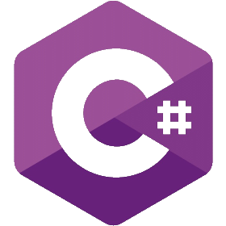

Changement de type de format
Ce projet permet d'apprendre les bases de JavaScript avec le changement de texte
Objectif : comprendre les bases de JavaScript (éléments DOM).
Compétences : JavaScript, manipulation du DOM.
Voir le projetDécouvrez ici les différents projets que j'ai réalisés pour apprendre les bases et les applications.
JavaScript est un langage de programmation essentiel pour le développement web. Voici quelques exercices que j'ai réalisés pour maîtriser les concepts de base.
Ce projet permet d'apprendre les bases de JavaScript avec le changement de texte
Objectif : comprendre les bases de JavaScript (éléments DOM).
Compétences : JavaScript, manipulation du DOM.
Voir le projet
J'ai travaillé sur les bases de JavaScript avec factorielle et sa somme
Objectif : comprendre les bases de JavaScript (boucles, conditions et logique).
Compétences : JavaScript, logique algorithmique, manipulation du DOM.
Voir le projet
Ce projet m’a permis de travailler les bases de JavaScript à travers les tables de multiplication.
Objectif : comprendre les bases de JavaScript (boucles, doucument et logique).
Compétences : JavaScript, logique algorithmique, manipulation du DOM.
Voir le projet
Ce projet m’a permis de travailler les bases de Windows Forms en C# à travers un convertisseur de température, argent, vitesse et masse
Objectif : comprendre les bases de C# (boucles, conditions et logique).
Compétences : C#, logique algorithmique, manipulation de Windows Forms.
Voir le projetCe projet m’a permis de travailler les bases de C# à travers un système de gestion de stock.
Objectif : comprendre les bases de C# (boucles, conditions et logique) et apprendre à utiliser la Console et les Base de Données (MySQL).
Compétences : C#, MySQL,logique algorithmique, manipulation de la Console et Base de Données.
Voir le projetCe projet m’a permis de travailler mon premier projet client léger en utilisant HTML, CSS,PHP et MySQL.
Objectif : Mettre en application les bases de HTML, CSS, PHP et MySQL pour créer un site e-commerce fonctionnel.
Compétences : HTML, CSS, PHP, MySQL, logique algorithmique.
Voir le projet